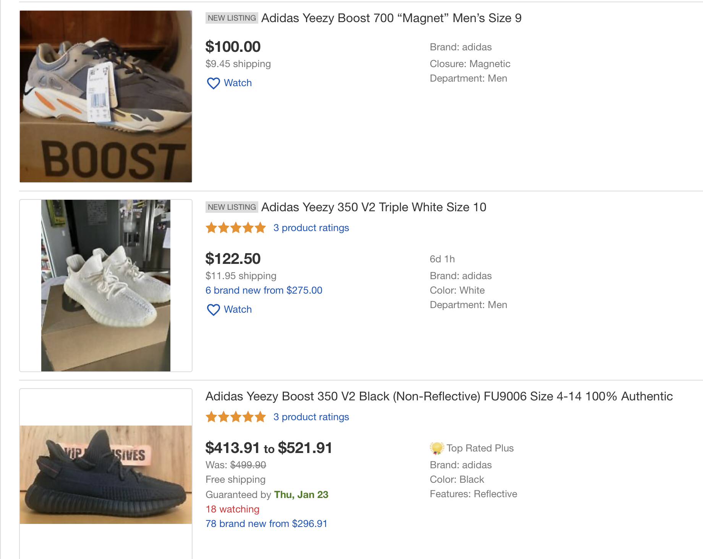

Techs used: Python, Keras, Nummpy, Pandas, Matplotlib, Ray - Parallel Processing, OpenCV, requests (RESTful API module), AMD GPU
A big challenge of Unsupervised Image Clustering is no pre-trained models specified for clustering images. And Unsupervised Image Clustering is difficult as natural due to the need of huge dataset to learn representatives of images. Another challenge is the big dataset of 1 million images and corresponding captions (upto 1 TB) given by eBay for training Clustering models.
Look at data shape, my team and I received 1002275 listings consisting of images and captions.
Rough analysis:
In academic projets, datasets (e.g. Titanic, Iris) are preprocessed and cleaned for studnets. However, the proper data is note is not the fact in reality. Noise and inconsistent image format (different channels/colors and different size) are always there.

Inconsistent image size - As you can see, no image has the same size (white blank filling).
Hence, need to resize them into a consistent image size.
Standardizing is another important task to prevent weight explosion.
Statistically, this is for easy comparision between images, which directly helps gradient descent
constantly move to minimum point and minimize loss function. Standardizing can be done by steps: